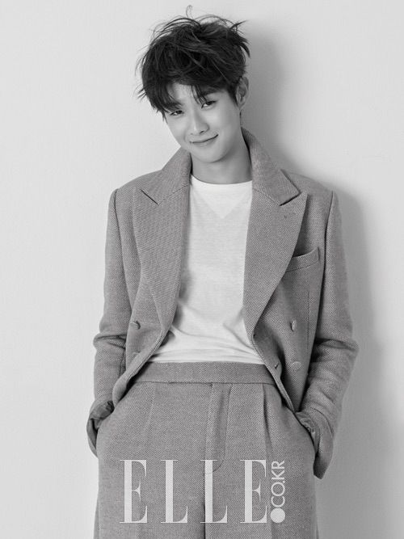

Choi Woo-Sik

Nama : Choi Woo-Sik
Tanggal Lahir: 26 Maret 1990
Profesi: Aktor
Instagram : @dntlrdl
Movies, Drama Series :
- Parasite | Gisaengchoong (2019) - Ki-Woo
- The Witch: Part 1. The Subversion | Manyeo (2018) - young man
- Train To Busan | Busanhaeng (2016) - Young-Gook
- A Killer Paradox | Salinja Nangam (Netflix / 2024) - Lee Tang
- Our Beloved Summer | Geu Hae Woorineun (SBS / 2021-2022) - Choi Ung
Awards :
- 1. Best Actor Selected by Directors ("Our Beloved Summer")
- - 2021 SBS Drama Awards - December 31, 2021
- 2. Best New Actor ("Set Me Free")
- - 2015 (36th) Blue Dragon Film Awards - November 26, 2015
- 3. Best New Actor ("Set Me Free")
- - 2015 (35th) Korean Association of Film Critics Awards - November 16, 2015
Alasan Mengidolakan